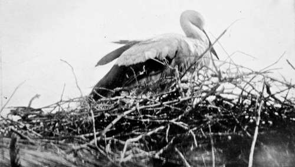

Collecting In The Dobrudscha. Part 7
Description
This section is from the book "Bird-Hunting Through Wild Europe", by R. B. Lodge. Also available from Amazon: Bird-Hunting Through Wild Europe.
Collecting In The Dobrudscha. Part 7
One of these sub-prefects I shall never forget. He was drinking with a priest, a pope of the Greek Church, at a wine shop we had stopped at for some food. Seeing that we were strangers, he came up and introduced himself and demanded our passports and business. After that he became friendly, and though he was then half-drunk we had to call for a fresh bottle of wine, and after that another, and yet another, while he talked of his adventures in foreign lands. He had been everywhere, all over Europe, and spoke French, Italian, and Spanish fluently, but was especially proud of his English. For my benefit he poured out a torrent of the foulest and filthiest talk I have ever heard anywhere, in such extraordinary English that I could not help laughing, but I told him he had evidently learnt in a very bad school. This he took for a compliment. Then he bragged of his skill as a sportsman, and told us of the enormous Bears and Wild Boars he had shot in places where to Rettig's certain knowledge they did not exist. Hearing I had a rifle with me, he begged to see it, and it was difficult to keep from laughing to see him handle and point it. He had evidently never handled one before. He wanted to shoot at a swallow sitting on a telegraph wire, in the middle of the village, and I have no doubt that if I had provided him with a cartridge he would have blazed away, and probably there would have been a case of manslaughter. I thought we were doomed to hear him 'gas' all night, but at last we managed to escape. That sub-prefect was a standing joke with us for the remainder of my stay, and provided us with much amusement, though at the time the man was an unmitigated nuisance.
The roads we found fairly good, but terribly uneven, and, the wagon being without springs, the jolting was terrific. My teeth were nearly driven through the top of my head sometimes, and I had to hold my stomach together with one hand while I clutched the side of the wagon with the other.
The dust was awful, quite four inches thick, and it flew about in dense clouds.
After ten hours of this torture under a broiling sun at last we arrived at our destination, the last eight or nine miles being through the outskirts of the forest, which gave us a relief from the dust and the heat, though we could only progress sometimes at a walk. An acquaintance of Rettig's, with whom we expected to put up, was away at his farm, and as he had married a wife who knew us not we could only leave our things until he returned, and we had to wander about from one restaurant to another until a very late hour. When at last he did return we were given a good room with a cushioned divan all round on which we slept comfortably, as I had brought my rugs and sleeping-bag.
White Stork (Ciconia Alba)
All this Dobrudscha was Turkish before the Treaty of Berlin, and many Turkish customs and Turkish names still survive. These people had their meals squatting on the floor round a low table three or four inches high, just as in Albania. The names of nearly all the villages are Turkish. Babadagh, the name of the forest we had come to work, is distinctly Turkish. The population is exceedingly mixed. Some villages are entirely inhabited by Bulgars, others are nearly all Italian or German. The fishermen are generally all Russians. In one village I found many Tartars from the Crimea; and in the towns are Jews and Greeks in great numbers, so that in a few generations there will be a fine blend here.
Though we slept here four nights, all our meals- except when we were in the forest, which was all day-had to be taken in restaurants ; and a most uncomfortable way of living it is. This was a big village and there was plenty of choice ; but they are all equally bare, rough, and comfortless. It was extraordinary to see prefects and officials, officers, priests, potmen, waiters, and barkeepers all hobnobbing together on equal terms in these pothouse places full of half-drunken fishermen all singing and shouting at the top of their voices.
This forest is really a wooded range of rocky hills, about 1,000 feet in height at one end; and as there are one or two precipitous crags there are a good many Griffon Vultures and Egyptian Vultures nesting there, and Eagles of various sorts are common. The Black Vultures also are fairly numerous, but they nest in the large trees growing on the higher parts.
Our first visit was to a colony of Griffons which were nesting in a semi-circular wall of rock not far from the village. But before we could reach the top of this rock-face-for from below it was inaccessible-there was a long tramp and a wind- and muscle-testing climb up a steep, rock-strewn slope. On the way we had seen a Black Kite (Milvus ater) and two or three Eagles ; and as we neared the colony many Griffons and a Black Vulture passed overhead, and an Eagle Owl was seen on the other side of a rocky valley. Two Egyptian Vultures also flew along the face of a precipitous rock, some ledges of which were liberally whitewashed as if they might be nesting there, but it was too overhung to tackle. Besides, I felt very unsafe on these rocks ; I was wearing rawhide Montenegrin opankis, and after one or two bad slips I funked any place that was at all dangerous. In Spanish alparagatas I think I could have reached some of the ledges ; but in these things I felt so insecure that I would run no risks. From Rettig's description I had expected to find it easy to photograph the Vultures on their nests, but it was not possible to get near enough, and the birds were very shy-I believe they are often shot at here-and a very long wait would have been necessary with but poor hope of success. It was of course too late to think about eggs of such early breeders, so we left them in peace, and proceeded first of all in search of water, of which we were much in need, for the heat was great. (While we were reconnoitring the position of the griffonry I had laid my rifle down in the sun on a rock, and on picking it up half an hour afterwards it was so hot I could hardly bear to touch it.)
Continue to:
- prev: XIV. Collecting In The Dobrudscha. Part 6
- Table of Contents
- next: Collecting In The Dobrudscha. Part 8